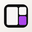

分出一个窗格，顺便把命令跑起来。
新窗格落在右侧，命令直接开跑。
gexi split --vertical -- "npm run dev"
gexi一个窗口，多个智能体
原生 macOS 终端工作区
每个项目的会话收进一个窗口。窗格是真终端，CLI 从外面驱动它。
这个窗口是活的：点标题栏里的按钮分屏或关闭。
~/aurora $ git status On branch feat/pricing Changes not staged for commit: modified: src/pricing.ts modified: src/pricing.test.ts no changes added to commit ~/aurora $
~/aurora $ npm test -- pricing PASS src/pricing.test.ts (4) PASS src/checkout.test.ts (2) Tests 6 passed (6) Duration 0.94s
~/aurora $ gh pr list #128 Fix tax rounding feat/pricing checks ok #124 Add invoice PDF feat/invoice ● pending
3 个窗格
~/aurora $ npm run dev VITE v6.2.1 ready in 312 ms Local: http://localhost:5173/ 10:42:18 hmr update /src/pricing.ts
01 — 画布
每个窗格都是真正的终端。向右或向下分，再拖到想要的位置。
~/aurora $ git diff --stat src/pricing.ts +4 −2 src/pricing.test.ts +2 −3 2 files changed ~/aurora $
~/aurora $ npm test 6 tests passed Duration 0.94s ~/aurora $
~/ledger $ go test ./... ok example.com/ledger 0.41s ~/ledger $
02 — 侧栏
会话按文件夹分组，关掉窗口也继续跑。⌘Q 才是真的退出。
退出时保存布局，agent 窗格在自己目录里恢复最近的会话；关掉有 agent 的窗格会先问，可以后台运行，之后在设置里找回。
claude 还在这里跑。
03 — CLI
窗口和 CLI 通过 Unix socket 说同一套 JSON-lines：建窗格、输入文字、读回屏幕。
~/aurora $ gexi split --vertical -- "npm run dev" ✓ 新窗格 c204 已建，正在跑 npm run dev ~/aurora $ gexi run -- claude ✓ 3f2a 已启动 claude ~/aurora $ gexi send -e "ls -la" ✓ 已发送到 3f2a ~/aurora $ gexi capture -p 3f2a --lines 4 3f2a * claude ~/aurora working c204 zsh ~/aurora 9b71 zsh ~/ledger waiting
新窗格落在右侧，命令直接开跑。
gexi split --vertical -- "npm run dev"agent 和普通命令一样，跑在真终端里。
gexi run -- claude · gexi send -e "ls -la"滚动缓冲、光标和状态都能读回来。
gexi capture -p 3f2a --scrollback --lines 4004 — agent
窗格屏幕只说 agent 打印了什么，不说它在做什么。gexi 叠一层 hooks，让它自己汇报。
状态也在 gexi list --json 的 activity 字段里，任何进程都能用 gexi event 汇报。
| Hook | 事件 | 状态 |
|---|---|---|
UserPromptSubmit | turn.start | 工作中 |
Stop | turn.end | 空闲 |
Notification | needs-input | 等待输入 |
SessionStart / End | session.start / end | 空闲 |
SubagentStart / Stop | subagent.start / end | 工作中 |
你原有的 hooks 照常触发，只覆盖 gexi 启动的 agent。
05 — 工作树
按 W，窗格搬进自己的 git worktree，从最新的 origin 切出；标题栏一路带着分支、改动和 PR。
W
从最新 origin 切出。
改动
分支和改动都在标题栏。
PR
agent 从 diff 写提交信息。
Merge
绿能合，琥珀检查中，红被挡。
归档
基分支快进，工作树归档。
合并按钮给出的三种答案
06 — 安装
早期软件，版本 0.0.113。免费，MIT 许可，从签名发布自动更新。
一行装好
$ curl -fsSL \
https://github.com/justdoswift/gexi/releases/latest/download/install.sh | sh
装进 /Applications，写不进去时用 ~/Applications。Apple 芯片，macOS 13+。
git clone https://github.com/justdoswift/gexi cd gexi go tool mygo build # .app 和 .dmg 在 build/ go build -o gexi ./cmd/gexi
go tool mygo dev 启动带热重载的开发版本。
libghostty-vt；没有 cgo。构建需要 Go 1.27+ 和 macOS 13+。gexi event 汇报。Claude Code、Codex、omp、Devin、Grok、Droid 和 Perch 按名字识别；重启时各自恢复最近的会话。